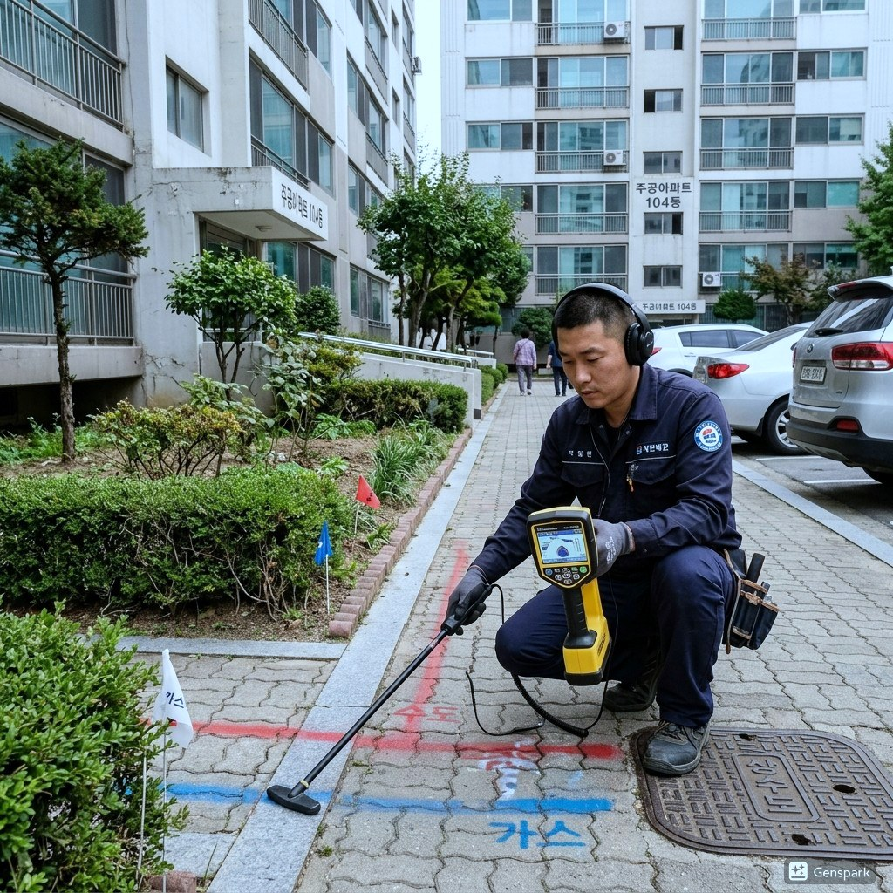
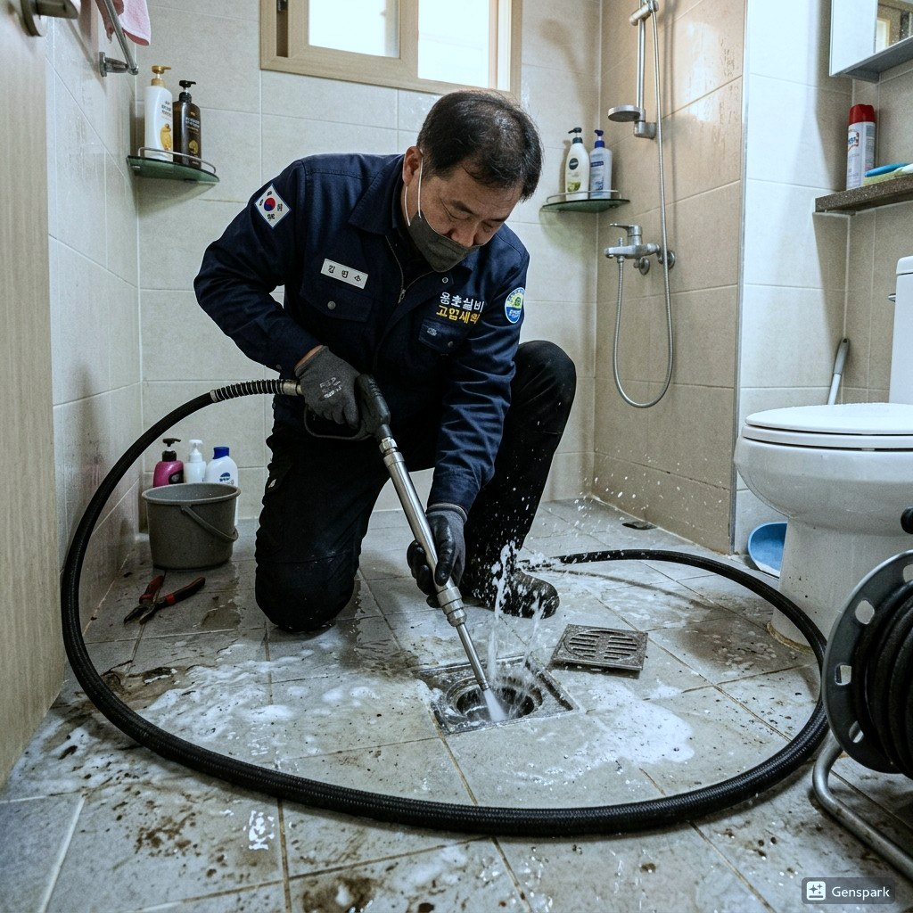
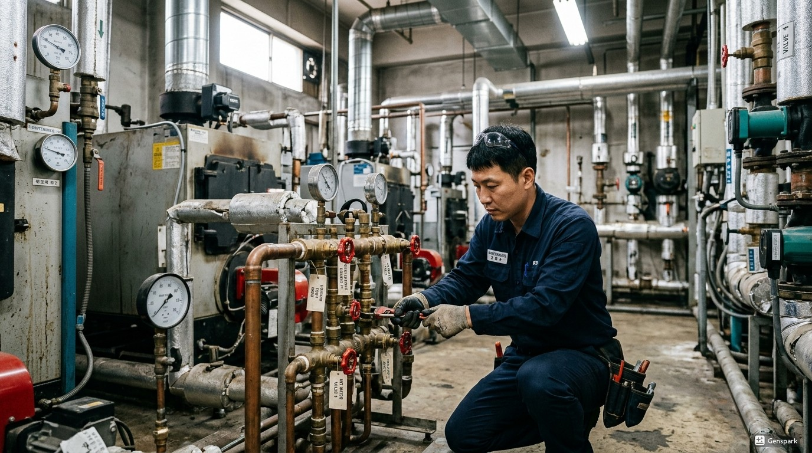

변기막힘은 긴급한 상황입니다. 인천연수구 송도, 연수동, 청학동 지역에서 변기가 막히면 제우스시설관리에 즉시 연락하세요. 물티슈, 생리대, 기저귀 등 이물질로 인한 막힘부터 배관 노후로 인한 구조적 문제까지 모두 해결합니다.
저희는 전문 드레인 기계로 이물질을 안전하게 제거하고, 내시경 카메라로 배관 상태를 확인하여 추가 문제가 없는지 점검합니다.

▲ 인천연수구 현장에서 전문 장비로 변기막힘 해결 작업 중
✅ 드레인 기계 - 스프링 와이어로 배관 내 이물질을 물리적으로 파쇄·제거
✅ 관로 내시경 카메라 - 배관 내부를 실시간 영상으로 확인하여 정확한 진단
✅ 고압세척기 - 최대 200bar 고압수로 배관 내벽 오염물 완벽 세척
✅ 관로탐지기 - 매설 배관의 위치와 깊이를 정확히 탐지

▲ 고압세척기를 이용한 배관 내부 청소 작업
인천연수구 전 지역에 28분 내 출동합니다. 야간·주말·공휴일 추가 요금 없이 동일한 서비스를 제공합니다.
📞 전화 한 통이면 정확한 견적을 바로 안내해드립니다
현장 상황에 따라 비용이 달라지기 때문에,
전화 상담 시 증상만 말씀해주시면 예상 비용을 바로 안내드립니다.
✅ 출장비 무료 | ✅ 미해결시 비용 0원 | ✅ 추가 요금 없음

▲ 인천연수구 배관작업 전문 장비 투입 작업 현장
20년 이상 현장 경험으로 어떤 복잡한 상황에서도 해결합니다. 인천연수구 지역에서 변기막힘 문제가 발생하면 전화 한 통으로 전문가가 출동합니다.
변기막힘의 주요 원인은 과도한 화장지 사용, 물티슈나 생리대 같은 비분해성 이물질 투입, 그리고 배관 노후입니다. 특히 물티슈는 '수세식 가능'이라는 표시가 있더라도 실제로는 분해되지 않아 막힘의 주범입니다.
양변기의 트랩 구조는 S자 또는 P자 형태로, 이 곡선 부분에서 이물질이 걸려 막힙니다. 전문 장비 없이 무리하게 뚫으려 하면 도기(변기 본체)가 파손되거나 배관이 손상될 수 있으므로 전문가 도움을 받는 것이 안전합니다.
Step 1. 긴급 접수
변기 상태(역류, 수위 상승, 이물질 유형 등)를 파악하여 적합한 장비를 준비합니다.
Step 2. 28분 내 출동
전문 기술자가 변기 전용 장비와 보호 장구를 갖추고 신속하게 방문합니다.
Step 3. 원인 진단
내시경 카메라로 변기 트랩 내부와 배관을 확인하여 막힘 원인(이물질, 배관 문제 등)을 정확히 파악합니다.
Step 4. 이물질 제거/관통
원인에 따라 특수 집게, 드레인 기계, 또는 고압세척기를 사용하여 문제를 해결합니다.
Step 5. 정상 작동 확인
물을 여러 번 내려 정상 배수 및 수위를 확인합니다.
Step 6. 위생 처리
작업 후 변기 주변 위생 처리 및 소독을 실시합니다.
건물 유형: 오피스텔 | 지역: 인천연수구
물티슈를 지속적으로 변기에 버려 배관 깊숙이 축적되어 막힘. 드레인 기계로 물티슈 덩어리 제거 후 고압세척 병행. 작업 시간 40분.
건물 유형: 25년 된 주택 | 지역: 인천연수구
변기 물을 내려도 수위만 올라가고 빠지지 않음. 내시경 확인 결과, 변기 트랩부에 칫솔과 물티슈가 엉켜 있었음. 이물질 제거 후 정상 배수 확인. 작업 시간 25분.
A. 변기 역류는 변기 자체의 막힘 또는 하수 본관의 문제일 수 있습니다. 특히 1층이나 지하에서 자주 발생하며, 정확한 원인 파악을 위해 내시경 카메라 진단이 필요합니다.
A. 작업 중에는 해당 변기 사용이 제한되지만, 대부분 1시간 이내 해결됩니다. 다른 화장실이 있다면 병행 사용 가능하며, 작업 완료 후 즉시 정상 사용할 수 있습니다.
A. 손이 닿지 않는 곳으로 이물질이 넘어갔다면 무리하게 밀어넣지 마세요. 전문 장비(관로 내시경)로 위치를 확인한 후 안전하게 제거합니다. 무리한 시도는 배관 파손을 유발할 수 있습니다.